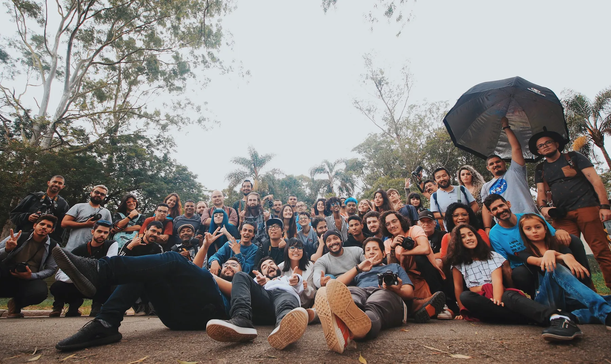

About BFT
A local organisation built around action, trust and opportunity.
Bridge For Tomorrow exists to connect people, improve places and create more routes into positive community life.

Our approach
Listen locally. Act practically. Grow responsibly.
We start with real needs and simple activities people can join. We work collaboratively with residents, volunteers, community groups, businesses and funders.
Community firstLocal voices shape what matters.
Open and welcomingActivities should feel accessible and inclusive.
Visible impactWe focus on work people can see and experience.
Responsible growthNew programmes will be funded, safeguarded and reviewed.
Our focus
Neighbourhoods where people feel connected and supported.
Our initial focus includes Sparkhill, Sparkbrook, Solihull and surrounding communities. We will expand carefully as local relationships and resources grow.